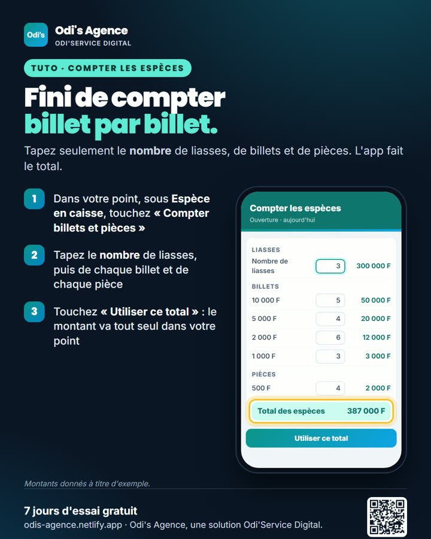
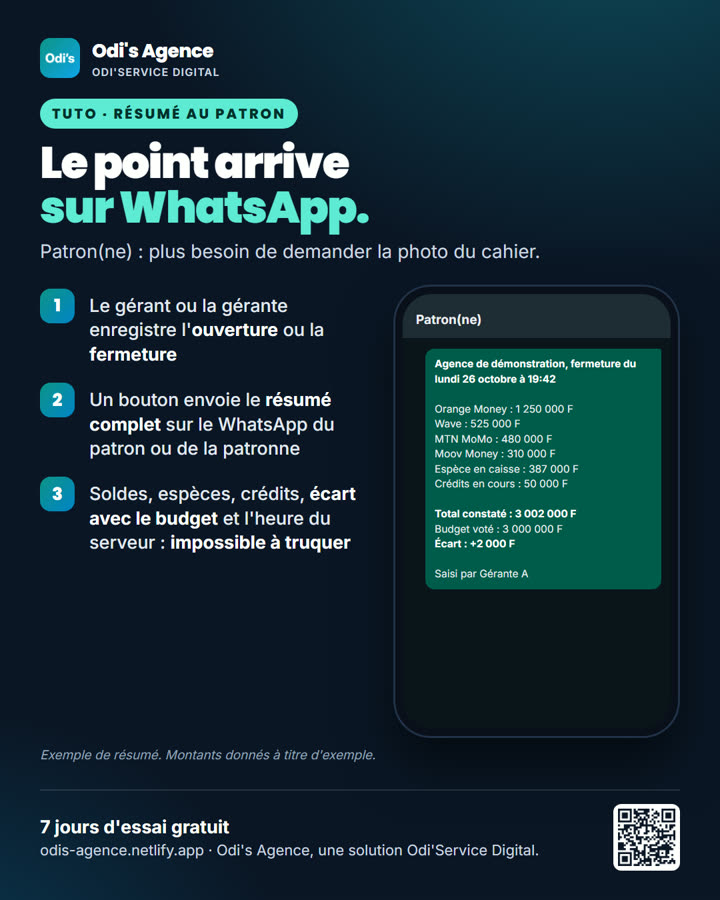

Odi's Agence
Le point des agences mobile money, sans cahier
Pour les gérants, gérantes, patrons et patronnes de points mobile money : l'ouverture et la fermeture se font en 2 minutes, l'écart avec le budget se calcule tout seul, et le résumé part directement sur le WhatsApp du patron.
- Plus de 20 opérateurs : Orange Money, Wave, MTN, Moov, Djamo, Western Union…
- Compteur de billets et pièces, crédits nommés avec relance WhatsApp
- Alerte « zéro de trop », heure du serveur impossible à truquer
- Marche sans réseau, plusieurs points de vente sur un téléphone
- Aucun lien avec vos comptes : jamais de code secret demandé

